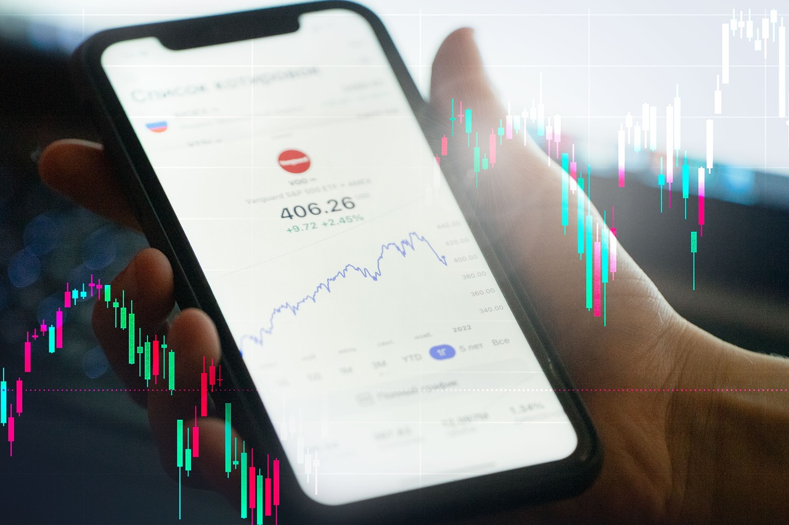
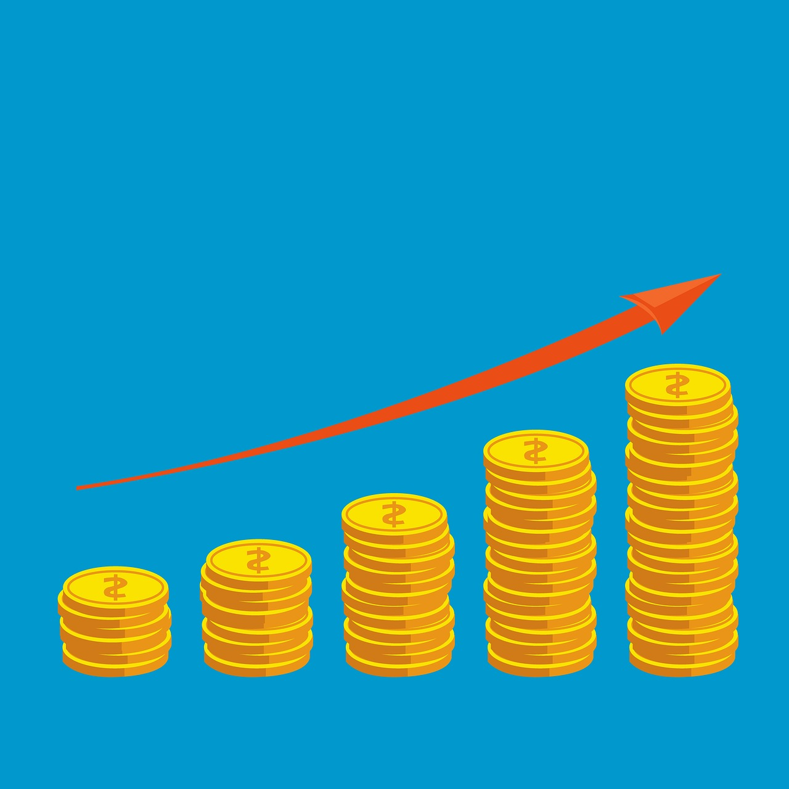
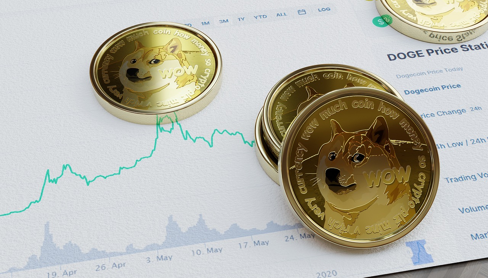

TL;DR
Start with low-cost index ETFs like VTI. Avoid chasing hot ETFs or ignoring expense ratios. Develop a simple screening process to make informed decisions.
Quick Answer: Start with Low-Cost Index ETFs

If you're new to investing, a practical approach is to start with low-cost index ETFs such as the Vanguard Total Stock Market ETF (VTI) or the iShares Core S&P 500 ETF (IVV). These funds have expense ratios typically around 0.03% to 0.04%, which means you keep more of your investment growth compared to higher-fee funds that might charge 0.5% or more annually.
For example, if you invest $1,000 and achieve an average annual return of 7%, a 0.04% fee vs. a 0.5% fee could lead to a difference of over $100 in returns after ten years.
Many beginners overlook these costs and may unknowingly opt for higher-fee ETFs, based solely on past performance. However, research shows that fees can significantly erode your returns over time.
Consider a scenario where you invest in a popular but higher-cost ETF with a 1% expense ratio instead of a low-cost option. In a decade, an investment of $10,000 could grow to $19,671 with the low-cost ETF, while the higher-cost one grows to just $17,449—showing a clear advantage to starting with index ETFs.
Why Most Beginners Pick the Wrong ETFs
Many beginners mistakenly chase what's trending without fully understanding the implications of their choices. For instance, during the tech boom of 2020, many retail investors eagerly poured their money into high-flying technology ETFs like the Invesco QQQ Trust (QQQ).
At its peak in September 2020, the QQQ had soared over 80% from its March lows, leading many to believe that such growth was sustainable. However, by early 2022, this ETF had experienced a drop of nearly 30% as market corrections set in.
A significant error beginners make is equating past performance with future returns. For example, the ARK Innovation ETF (ARKK) was another favorite among newcomers in 2020, boasting a staggering 152% return for that year. However, those who jumped in expecting continued explosive growth found themselves facing a nearly 60% decline by the end of 2021.
Often, beginners focus solely on recent performance metrics, glossing over the underlying assets and strategy of the ETF. Many don't realize that certain sector-focused ETFs can be inherently volatile.
For instance, if someone invested $5,000 in an emerging market ETF after a strong performance in 2020, they may have seen that investment drop significantly as geopolitical tensions and economic instability affected those markets.
A case in point involves an investor named Sarah. Enthralled by the rapid growth of a clean energy ETF, she decided to invest $10,000 at the height of its performance.
A 30-Day Screening Process

Creating an effective ETF screening process can help you make informed decisions. Here’s a simple 30-day process you can follow:
- Week 1: Identify your investment goals. Are you looking for growth, income, or a balanced approach?
- Week 2: Research different ETF categories like equity, fixed income, or commodities.
- Week 3: Screen ETFs based on criteria like expense ratios and performance history. Aim for an expense ratio below 0.5%.
- Week 4: Analyze your selections further using tools such as Morningstar or Yahoo Finance to gauge overall performance and risk factors.
A Real Scenario for Beginner Investors

Imagine a beginner investor who decides to embark on their investment journey with just $100 per month. Rather than waiting to accumulate a larger sum, they opt for a straightforward recurring investment plan that allows them to enter the market regularly.
For instance, they allocate $60 to a broad market ETF such as the S&P 500 ETF (SPY), $20 to a dividend-focused ETF like the Vanguard Dividend Appreciation ETF (VIG), and keep the remaining $20 in cash or a short-term bond fund to maintain a sense of security.
Initially, this investor's account balance may seem insignificant. In the first three months, for example, they will have only contributed $300, and if the market faces volatility, their total investment value might even dip slightly, perhaps to around $290. However, the key here is the behavioral change that occurs over time.
By committing to this investment strategy, the investor is cultivating consistency. They are less likely to give in to the urge to time the market, which can often lead to costly mistakes, particularly for beginners who may feel overwhelmed by market fluctuations. Instead, they are beginning to understand how their portfolio reacts under varying market conditions.
Let’s consider a specific scenario after one year: this investor has consistently invested $100 per month, totaling $1,200 over the year. With the S&P 500 ETF showing an average annual return of about 10%, their initial $720 investment into SPY might grow to approximately $792.
Meanwhile, their $240 in dividends from the VIG could yield around $11 throughout the year, bringing their total ETF investments to about $1,043.
Mistakes That Cost Real Money
Beginners often make costly mistakes that could be avoided by taking the time to educate themselves.
- Ignoring Fees: Many investors overlook expense ratios when choosing ETFs. For instance, consider two similar ETFs tracking the same index: one has a 0.5% expense ratio, while the other is at 1%.
If you invest $10,000 in each for 20 years, the lower-fee ETF will accumulate around $14,874, while the higher-fee option will only grow to about $13,439. Over two decades, that seemingly small 0.5% difference can lead to a staggering loss of $1,435!
Not only should you be aware of the expense ratios, but you should also consider the impact of trading fees—some brokers charge commissions that can quickly eat into your returns, especially for frequent traders.
- Not Rebalancing: Failing to rebalance your portfolio can alter your intended risk profile significantly over time. Say you start with a 60% allocation to stocks and 40% to bonds. After a strong bull market, your stock portion may balloon to 80%, exposing you to unnecessary risk.
Suppose you initially invested $50,000, with $30,000 in stocks and $20,000 in bonds. If stocks surge and grow to $45,000 while bonds remain at $20,000, your asset mix shifts dangerously to 69% stocks and 31% bonds.
Without a yearly rebalance, you could be setting yourself up for significant downturns if the market corrects. This misalignment can cost you money and peace of mind when volatility strikes.
Which Tools or ETFs Make This Simpler
To simplify your ETF selection process, numerous tools and resources can streamline your decision-making. Recommended tools include:
- Morningstar: Offers comprehensive ratings and reviews of ETFs.
- Yahoo Finance: A user-friendly platform to track and compare ETFs side by side.
- ETFreplay: Ideal for back-testing ETF strategies.
Start with these resources to hone your selection. Avoid overly complicated tools until you're comfortable.
FAQ
What are common fees associated with ETFs?
Common fees include the expense ratio, which typically ranges from 0.03% to 1%. Additionally, you may incur brokerage fees when buying or selling ETFs.
How often should I rebalance my ETF portfolio?
It's commonly recommended to rebalance your portfolio annually to maintain your desired asset allocation. However, you can also rebalance when your allocation shifts significantly due to market movements.
This article is reviewed for practical usefulness and updated when information changes.
Next step
Use the article as a decision point, not just reading material. Your next system matters more than more browsing.
Search more articles
Find related tools, workflows, and guides.
Photo credits
- Photo 1: OleksandrPidvalnyi via Pixabay
- Photo 2: HeteroSapiens via Pixabay
- Photo 3: qamarabbas20 via Pixabay
- Photo 4: KNFind via Pixabay
- Photo 5: Yen Vu via Unsplash